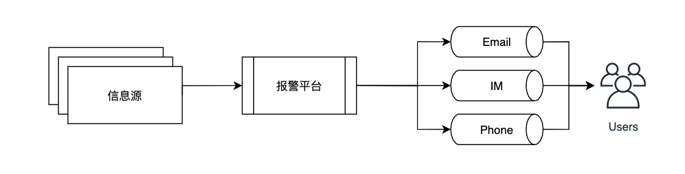
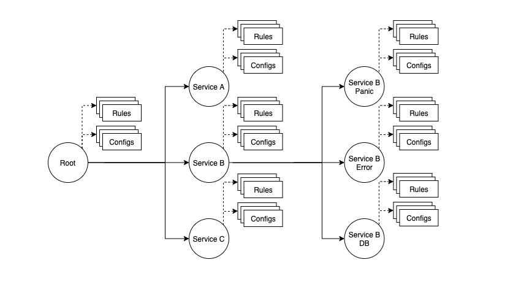
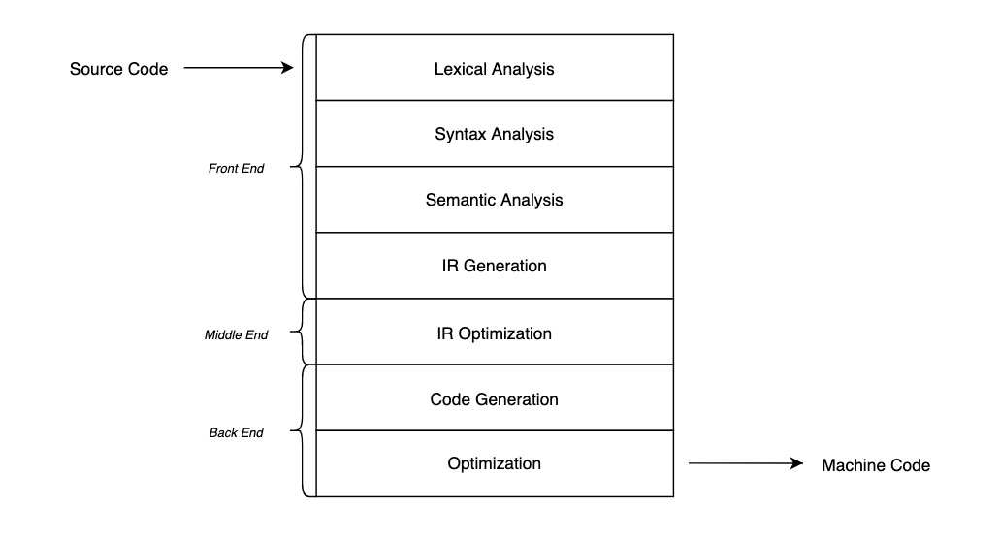
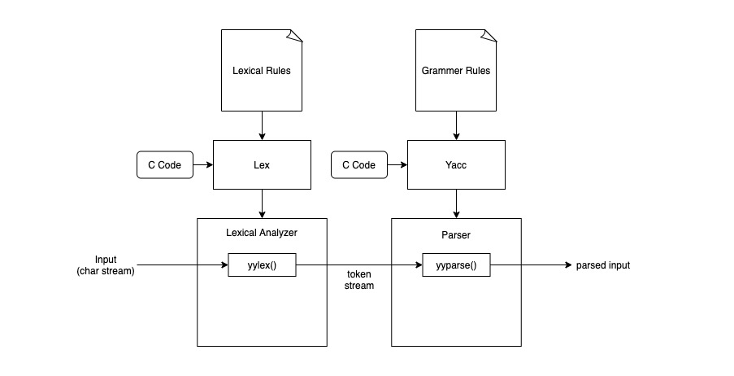

报警平台的匹配器演进
简介
本文介绍伴鱼内部服务报警平台中匹配器模块的演进，及其利用 Lex 和 Yacc 同类工具构建 DSL 编译器的过程。是我和团队成员在伴鱼的质量工程小组的一小部分工作。
背景
报警平台是伴鱼内部各端、应用、基础设施等服务异常状态信息的集散中心。整体流程如下图所示：

信息源将信息投递给报警平台，后者将这些信息最终通过邮件、即时消息、电话呼叫的形式路由给理应关心它的人。总体而言，路由的需求可以分为以下几种：
- 路由给服务的负责人及其团队
- 路由给服务依赖方人员及其团队
- 路由给所有值班人员所在的即时消息群
为了满足这样的需求，报警平台采用树状结构组织路由信息，如下图所示：

每个节点是一个路由节点，节点上可以挂载不同的规则，如抑制规则、通知规则；也可以存放不同的配置信息，如触发报警的阈值，以及相关负责人及其团队的联系方式。
根路由是所有异常信息的必经之路，经过这里的信息会路由给所有值班人员；一级子路由节点是所有的服务，经过这里的信息会路由给该服务的负责人及其团队；如果有其它团队想要订阅某服务的异常消息，如 Service A 团队想要了解 Service B 的崩溃 (panic) 信息，则可以在 Service B 节点下创建子路由 Service B Panic，并在上面配置 Service A 团队的联系方式，从而达到订阅目的。
那么如何判断一条报警信息将经过哪些路由节点，一条规则是否起作用？这就需要引入本文的主角：匹配器 (matcher)，每个路由、每条规则上都会挂载一个匹配器，当它成功匹配到报警信息时，路由和规则就会生效。一条典型的报警信息会有许多信息，我们不妨将它看作是任意数量的键值对，如：
{
"title": "Web 服务 ServiceB 崩溃报警",
"source": "192.168.0.1",
"error_type": "panic",
"project_name": "ServiceB",
"project_source": "web",
"details": "(call stack)",
//...
}
我们可以试着写出路由节点 ServiceB 及 Service B Panic 的匹配器：
- ServiceB：project_source 为 web 且 project_name 为 ServiceB
- Service B Panic：project_source 为 web，且 project_name 为 Service B，且 error_type 为 panic
报警平台的用户需要亲自配置部分路由和规则，能否定制一套简单、易上手的 DSL？如：
project_source = "web" AND project_name = "ServiceB"
这样即使用户不是工程师，看过几个例子后也能熟练地书写匹配表达式。
匹配表达式定义
匹配器表达式由原始表达式和复合表达式构成。原始表达式是最小的匹配器，有完全匹配和正则匹配两种：
# 完全匹配
project_source = "web"
# 正则匹配
details =~ "duplicate key when insert"
原始表达式的左手边是报警信息的标签，不带双引号；原始表达式的右手边是匹配文本，带双引号。不同的原始表达式可通过二元关系运算，AND (且) 和 OR (或) ，组合成复合表达式如：
project_source = "web" AND project_name = "ServiceB" OR "error_type" = "panic"
类似于乘除之于加减，AND 的优先级大于 OR，如果要改变优先级，可通过增加括号来实现，如：
project_source = "web" AND (project_name = "ServiceB" OR "error_type" = "panic")
编译过程
一个完整的编译过程大致分三阶段：

- 前端：验证源码的语法和语义，并解析成中间表述 (Immediate Representation, IR)
- 中端：针对 IR 作一些与目标 CPU 架构无关的优化
- 后端：针对目标 CPU 架构优化并生成可执行的机器指令
我们也可以将匹配器表达式理解成一门语言，但我们只需要将它转化成合理的内存数据结构即可，因此这里只涉及到完整编译过程的前端：
- 词法分析 (Lexical Analysis)：将完整的语句拆成词语和标点符号
- 语法分析 (Syntax Analysis)：根据语法规范，将词语和标点符合组合成抽象语法树 (AST)
- 语义分析 (Semantic Analysis)：向语法树中添加语义信息，完成校验变量类型等各种语义检查
- 生成中间表述 (IR Generation)：转化成合理的内存数据结构
以下就是匹配表达式的 IR：
type PrimitiveMatcher struct {
Label string
Text string
IsRegexp bool
re *regexp.Regexp
}
type Matcher struct {
PrimitiveMatcher *PrimitiveMatcher
IsCompound bool
Operator MatcherOperator
Operands []*Matcher
}
其中 Matcher 既可以是原始匹配器 (表达式) 也可以是复合匹配器 (表达式)。
下面分别介绍报警平台匹配器编译器的两个版本实现，Matcher Compiler V1 (MCV1) 和 Matcher Compiler V2 (MCV2)。
Matcher Compiler V1
在实现 MCV1 时我们并未从编译的角度看待这个模块，而只是单纯地想实现从表达式到 IR 的转化。凭借工程师的本能，MCV1 将编译的前端处理过程分成 3 步：
err = m.parseToken()
if err != nil {
return
}
err = m.toElements()
if err != nil {
return
}
return m.buildMatcher()
parseToken
parseToken 将原始表达式转化成一个词语数组，是词法分析的雏形，其整体过程如下：
for i, c := m.expr {
hasLeftDoubleQuote := false
switch c {
case '(':
//...
case ')':
//...
case '=':
//...
case '~'
//...
default:
//...
}
}
parseToken 需要许多状态，如：
- 是否在括号内
- 是否在引号内
- 遇到
~要考虑是否会和上一个字符共同组成=~ - ...
由于状态较多，要同时考虑各种状态及其之间的转化过程，使得 parseToken 足够健壮，过程烧脑且容易出错。
toElements
toElements 遍历词语数组，构建其中的原始表达式，可以看作理解成是语法分析和语义分析的一部分，其整体过程如下：
for i, word := range m.words {
switch strings.ToLower(word) {
case "=":
leftWord, rightWord, _ := m.tryFetchBothSideWord(i)
m.addElement(m.buildPrimitiveMatcher(leftWord, rightWord, false))
case "=~":
leftWord, rightWord, _ := m.tryFetchBothSideWord(i)
m.addElement(m.buildPrimitiveMatcher(leftWord, rightWord, true))
// deal with more cases
default:
// ...
}
这部分逻辑比较简单，遇到 = 或者 =~ 时看一下前后的词语，看是否能构成原始表达式。
buildMatcher
buildMatcher 遍历 elements 数组，构建最终的树状复合表达式，其实就是中缀表达式的计算过程，是栈的典型应用场景，利用操作符栈和操作数栈即可实现，其整体过程如下：
var (
valueStack Stack
opStack Stack
)
for i, element := range m.elements {
switch e := element; {
case e == "(":
opStack.Push("(")
case e == ")":
for op := opStack.Pop(); op != "(" {
rhs, lhs := valueStack.Pop(), valueStack.Pop()
// apply
}
// operators
case isOp(e):
currOp = e
for prevOp := opStack.Peek(); precedence[currOp] <= precedence[prevOp] {
opStack.Pop()
rhs, lhs := valueStack.Pop(), valueStack.Pop()
// apply prevOp
}
opStack.Push(currOp)
default:
valueStack.Push(e)
}
}
// deal with the rest valueStack and opStack
MCV1 小结
MCV1 是凭借工程师本能构建的一个模块，优势就在于可以迅速地搭建原型，验证想法。从代码健壮性角度看， parseToken 的状态管理比较脆弱；从可读性角度看，无法从逻辑中直接看出其所支持的语法，为后期维护造成障碍；从可扩展性角度看，buildMatcher 目前只支持中缀表达式，如果有语法变化将整体逻辑产生较大影响；从效率角度看，编译一次表达式需要 3 次遍历，如果将 toElements 与 buildMatcher 逻辑合并可以优化到 2 次。
Matcher Compiler V2
为了解决上述问题，我们想到了 Lex 和 Yacc。Lex 是 lexical analyzer generator，能够帮助我们生成词法分析器 (lexical analyzer)；Yacc 是 parser generator，能够帮助我们生成解析器 (parser)，完成语法分析。Lex 和 Yacc 是 Unix 系统的原生工具，Linux 与MacOS 平台也都自带这两个工具。既然已经有前人为我们栽树，我们为什么不趁机乘凉？
Lex & Yacc
Lex 和 Yacc 的协作过程如下图所示：

开发者将构词规则和一些定制化逻辑 (C Code) 定义到 lex.l 文件中，利用 lex 命令生成词法分析器；将语法规则和一些定制化逻辑定义到 parser.y 文件中，利用 yacc 命令生成解析器。词法分析器的 yylex 方法将输入文本转化成 token，投喂给 yyparse，后者根据语法和定制化逻辑将 token 流转化成最终的目标数据结构，即 IR。
Example：Calculator
以一个支持加减运算的计算机为例，先定义语法规则：
// parser.y
%token NUMBER
%%
// 括号中的 $$ 表示语法左手边 (LHS) 的值
// 括号中的 $1、$2、$3 表示语法右手边 (RHS) 的值
statement: expression { printf("= %d\n", $1); }
;
expression: NUMBER '+' NUMBER { $$ = $1 + $3; }
| NUMBER '-' NUMBER { $$ = $1 - $3; }
| NUMBER { $$ = $1; }
;
第一行的 token 定义语法中的数据类型，由于单个字符本身没有歧义，在 Lex 和 Yacc 无需特别定义单字符 token，如 + 和 -，因此在这里我们只需要数字 NUMBER。在第一个 %% 之后，定义了计算器的语法，含义非常直白，可读性强。
然后再定义构词规则：
// lex.l
%{
#include "y.tab.h"
extern int yylval;
%}
%%
[0-9]+ { yylval = atoi(yytext); return NUMBER; }
[ \t] ;
\n return 0;
. return yytext[0];
%%
在两个 %% 中间的就是构词规则：
- 符合正则表达式
[0-9]+就是数字类型的词语，其对应的值为atoi(yytext) - 符合正则表达式
[ \t]的不处理，即忽略空格和制表符 - 符合正则表达式
\n的返回 0，即用换行符标识文本结束位置 - 符合正则表达式
.的返回文本本身，即所有非数字的字符直接返回，这里实际上指的就是+和-。
接下来只需要用 lex 和 yacc 命令生成词法分析器和解析器，然后运行即可：
# MacOS
$ lex lex.l
$ yacc -d parser.y
$ gcc y.tab.c lex.yy.c -ly -ll -o calculator
$ ./calculator
> 128 + 128
> = 256
对比分析
从代码健壮性角度上看，lex 生成的词法分析器已经经受时间的检验，开发者大可相信其代码的健壮性；从可读性角度看，构词规则和语法规则定义简短，通俗易懂；从可扩展性角度看，任何可以通过上下文无关文法 (context-free grammar) 表达的语法都能支持；从效率角度看，yylex 与 yyparse 可以流式地处理文本，yyparse 从 yylex 获取词语，即时地根据语法规则组合成 IR，这种做法使得编译前端的工作只需要 1 次遍历便可完成。但 lex 和 yacc 为了支持更复杂的场景，其生成的代码也会更复杂，这也是效率与通用性权衡的表现。
Nex & Goyacc
报警平台使用 Go 语言编码，直接使用 lex 和 yacc 需要引入 cgo，这也使得二者的使用门槛变高。好在 Go 官方提供了 goyacc，方便我们在 parser.y 中引入用 Go 语言编写的定制化逻辑；斯坦福的一位博士 Ben Lynn 开源了它的 nex 项目，作为用 Go 语言原生开发的词法分析器生成器，能与 goyacc 兼容，形成类似 lex 和 yacc 一般的搭档。接下来我们将利用 nex 和 goyacc 来实现匹配器编译器。
与计算器的例子类似，我们先看语法规则中定义的数据类型：
%union{
str string
expr *MatchExpr
pexpr *PrimitiveExpr
}
%token LABEL VALUE
%token REG_EQ AND OR
%type <expr> expr
%type <pexpr> pexpr
%type <str> LABEL VALUE
%type <str> REG_EQ AND OR
其中，语法中的数据类型包括：
LABEL：原子表达式的 LHSVALUE：原子表达式的 RHSREG_EQ、AND、OR分别为正则匹配，且和或
此外我们还定义了原始表达式 pexpr 和复合表达式 expr 供定义语法规则时引用。由于语法中有多种关系运算符，它们的优先级不同，因此我们还需要定义运算符的优先级：
%left OR
%left AND
%left '(' ')'
left 表示先从运算符的 LHS 开始计算，三者的优先级关系是 OR < AND < '(' == ')'，非常直观。最后进入我们的语法规则：
// 匹配器表达式可以是空字符串，也可以是一个合法的表达式
matcher:
{ setResult(yylex, &Matcher{}) }
| expr
{ setResult(yylex, $1) }
// 表达式可能以下之一：
// 复合表达式：expr AND expr
// 复合表达式：expr OR expr
// 原始表达式：pexpr
// 括号表达式：(expr)
expr: expr AND expr
{ $$ = &Matcher{IsCompound: true, Operator:$2, Operands:[]*Matcher{$1,$3}} }
| expr OR expr
{ $$ = &Matcher{IsCompound: true, Operator:$2, Operands:[]*Matcher{$1,$3}} }
| pexpr
{ $$ = &Matcher{IsCompound: false, PrimitiveMatcher:$1} }
| '(' expr ')'
{ $$ = $2 }
// 原始表达式要么是 LABEL = VALUE, 要么是 LABEL =~ VALUE
pexpr: LABEL '=' VALUE
{ $$ = &PrimitiveMatcher{Label:$1, Text:$3, IsRegex: false} }
| LABEL REG_EQ VALUE
{ $$ = &PrimitiveMatcher{Label:$1, Text:$3, IsRegex: true} }
每条语法规则的含义已经标明在注释中，在每条语法规则之后，是 Go 语言编码的简单逻辑，告诉解析器在不同情况下如何拼装 IR。搞定语法后，我们就可以定义构词规则：
/[aA][nN][dD]/ { lval.str = "AND"; return AND }
/[oO][rR]/ { lval.str = "OR"; return OR }
/=~/ { return REG_EQ }
/=/ { return int(yylex.Text()[0]) }
/\(/ { return int(yylex.Text()[0]) }
/\)/ { return int(yylex.Text()[0]) }
/[A-Za-z][A-Za-z0-9_]*/ { lval.str = yylex.Text(); return LABEL }
/".*"/ { lval.str = yylex.Text()[1:len(yylex.Text())-1]; return VALUE }
/[ \t\r\n]+/ { /* white spaces ignored */ }
//
package c
- 大小写无关的字符串 "AND" 返回类型
AND；"OR" 返回类型OR - "=~"、"="、"("、")" 直接返回相应的数据类型
- 正则表达式
/[A-Za-z][A-Za-z0-9_]*/匹配的是原始表达式中的LABEL - 正则表达式
/".*"/匹配的是原始表达式中的VALUE - 正则表达式
/[ \t\r\n]+/匹配的是空格字符，即忽略所有类型的空格
最后使用 nex 和 goyacc 就可以生成词法分析器和解析器：
$ nex nex.l
$ goyacc -o parser.go parser.y
然后再把二者串起来即可：
// 忽略细节处理
func Compile(ctx context.Context, in io.Reader) (m *Matcher, err error) {
lr := NewLexer(in)
yyParse(lr)
if lr.parseResult == nil {
err = SyntaxError
return
}
m = lr.parseResult.(*Matcher)
return
}
Rob Pike Style Lexer
完成上面的工作，本可以告一段落，但有一个问题还困扰着我们：”为什么 Go 只推出了 yacc 的移植版本，而不顺便推出 lex 的移植版本？“ 几经周折找到了 Rob Pike 2011 年的一次演讲： "Lexical Scanning in Go"。在演讲中他认为 ” lex 生成的代码太多，过于复杂，用 Go 语言实现一个并非难事，且 Go 的 channel 能方便地实现 lex 和 yacc 的流水线协作。“ 尽管这种观点也是在为 Go 站台，我们还是决定试一试他提出的 lexical scanning 方案。
词法分析的过程，就是从输入字符流起点扫描至终点的线性过程，在扫描期间，词法分析器需要正确地判断自己所处的状态，以起点为例，刚开始扫描，可能进入 LABEL 状态，也可能进入 ( 状态：
labela = "a" AND (labelb = "b" OR labelc = "c")
↑
在LABEL中
(labela = "a") OR labelb = "b"
↑
在'('中
扫描完 VALUE 后，可能进入结束状态，也可能进入 ) 状态或 关系运算符 状态：
labela = "a" AND (labelb = "b" OR labelc = "c")
↑
进入[关系运算符]状态
(labela = "a")
↑
进入 ')' 状态
labela = "a"
↑
进入[结束]状态
不难看出，这实际上就是一个状态机，详细的状态转移过程如下图所示：
# start: [开始]; leftParen: '('; label: [标签]; eq: [匹配符]; value: [文本];
# rightParen: ')'; binaryOp: [关系运算符]; end: [结束]
+------------+
| rightParen | -------------+
+------------+ |
^ | |
| | |
+----------------------+ | ----------------+ |
| v | v |
| +-----------+ +-------+ +----+ +------------+ +-----+ |
| | start | --> | label | --> | eq | --> | value | --> | end | |
| +-----------+ +-------+ +----+ +------------+ +-----+ |
| | ^ | |
| | | | |
| v | v |
| +-----------+ | +------------+ |
+- | leftParen | +--------------------- | binaryOp | <------------+
+-----------+ +------------+
^ |
+------------------------------------------+
接下来就需要让这个状态机动起来：
type lexer struct {
name string // used only for error reports.
input string // the string being scanned.
start int // start position of this item.
pos int // current position in the input.
width int // width of last rune read from input.
items chan item // channel of scanned items.
}
// stateFn represents the state of the scanner
// as a function that returns the next state.
type stateFn func(*lexer) stateFn
func (l *lexer) run() {
for state := lexStart; state != nil; {
state = state(l)
}
close(l.items)
}
其中 stateFn 就是状态转移方程，约定当 stateFn == nil 时，状态机停止，即 nil 就是结束状态的转移方程。接下来只需要定义各个状态转移方程即可：
func lexStart(l *lexer) stateFn {}
func lexLabel(l *lexer) stateFn {}
func lexLeftParen(l *lexer) stateFn {}
func lexRightParen(l *lexer) stateFn {}
func lexEq(l *lexer) stateFn {}
func lexValue(l *lexer) stateFn {}
func lexBinaryOp(l *lexer) stateFn {}
每当状态即将转移时，stateFn 内部就会将在本状态中扫描到的词语传给 item channel，这个 channel 就是 lexer 与 parser 之间通信的媒介。
值得一提的是，Go 的模板引擎 template，就是按照上述方式构建的，感兴趣可以阅读源码。
参考文献
- Compilers: Principles, Techniques, and Tools, the dragon book
- GeeksforGeeks: Expression Evaluation Problem
- Lex & Yacc, website, book
- Lexical Scanning in Go by Rob Pike, video, slides, go blog
- Go Template, source code